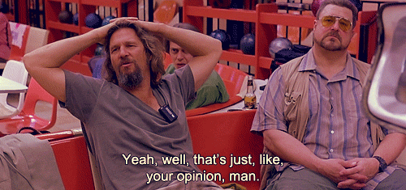
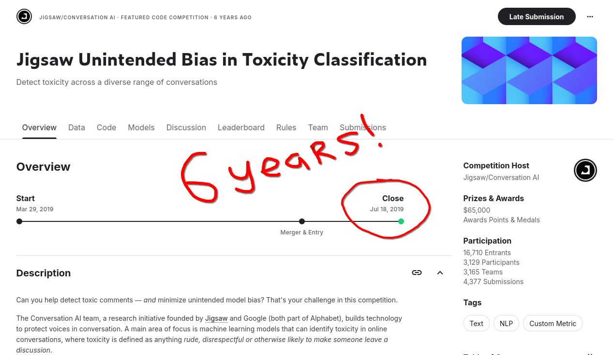
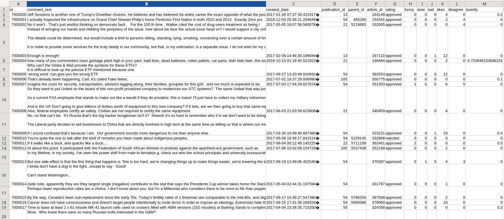
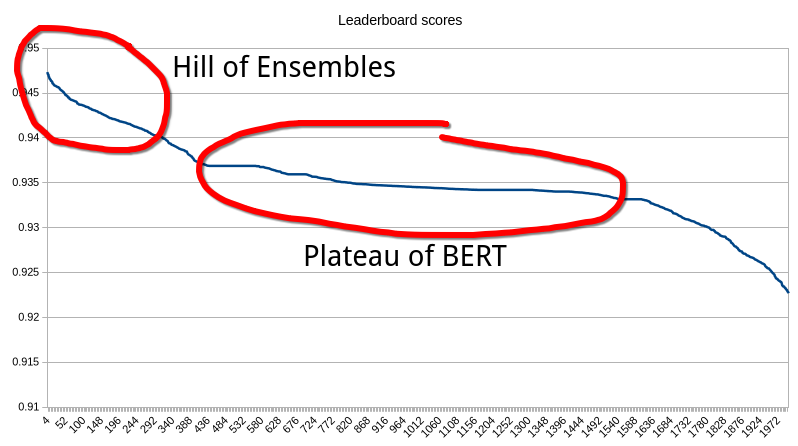
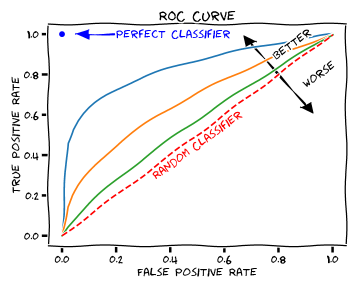
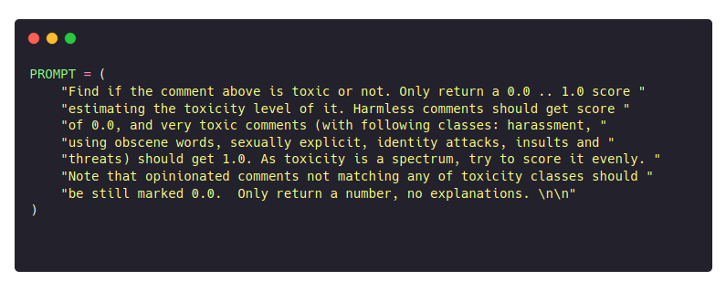
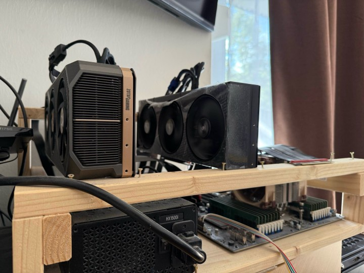

Classifying toxic comments
with Qwen3
LIAR LIAR PANTS ON FIRE... how dumb does he think we are.
We think justin is extremely dumb. What a goof ball.
He is gets in deeper and deeper over his head.
Time to hold him up as an adult and stop allowing
him to think and speak.
(from Jigsaw Toxicity Dataset)
Hardcore AI Hackathon | Berlin 2025 | RomanG
How it started
- A collab with Dr. Chripa Schneller
- Can you detect toxicity level in online comms?
prompting vs fine-tuning

Opinion: GPT4/Claude4/Deepseek is all you need, no training data required, just write a proper prompt
data > opinions
- no data = LLM is better than nothing
- but what if we do have data?
Necro-kaggling
- Pick a mature & old competition
- Use 2025 tech vs. legacy
Data
- Civil comments, comments from news sites
- 1.8M train + 100K test, human labels
Leaderboard
Metric: ROC-AUC
A binary classification metric, 0.5=bad 1.0=perfect
 Disclaimer: we screwed leaderboard bias-AUC score - so we use global AUCBaseline #1: BERT
| Try | Model | Size | ROCAUC |
| 1 | bert-base-uncased | 300M | 0.9686 |
| 2 | ModernBERT-base | 300M | 0.9613 |
| 3 | ModernBERT-large | 500M | 0.9677 |
Baseline #2: GPT4
| Try | Model | Size | ROCAUC |
| 1 | bert-base-uncased | 300M | 0.9686 |
| 4 | gpt-4.1-mini | smol | 0.8350 |
| 5 | gpt-4.1 | big | 0.8591 |
Qwen3 of despair
- Prefill with prompt
- Special token <|give-me-class-activations-please|>
- Generate single output token, slap classifier head
Qwen3: raw or prompted?
SYSTEM_PROMPT = (
"You are a forum moderator looking for toxic, obscene comments, "
"threats, insults, identity attacks and sexual content. "
)
| Try | Model | Size | ROCAUC |
| 1 | bert-base-uncased | 300M | 0.9686 |
| 6 | qwen3 (raw) | 0.6B | 0.9715 |
| 7 | qwen3 (chatml) | 0.6B | 0.9724 |
Outcome: slightly better results with ChatML
Qwen3: QLoRA of full?
I'm limited by the technology of my time (H.Stark)
Qwen3: QLoRA of full?
QLoRA: bigger models, potential drop in quality?
| Try | Model | Size | ROCAUC |
| 1 | bert-base-uncased | 300M | 0.9686 |
| 7 | qwen3 (full) | 0.6B | 0.9724 |
| 8 | qwen3 (qlora, 4bit) | 0.6B | 0.9722 |
| 9 | qwen3 (qlora, 8bit) | 0.6B | 0.9711 |
Outcome: QLoRA drop is okey
Qwen3: to the sky 🚀🚀🚀
| Try | Model | Size | Time | ROCAUC |
| 1 | BERT | 300M | 0.8h | 0.9686 |
| 7 | qwen3 | 0.6B | 3.5h | 0.9724 |
| 10 | qwen3 | 1.7B | 7.5h | 0.9745 |
| 11 | qwen3 | 14B | ~40h* | 0.9759 |
| 11 | qwen3 | 32B | ~70h* | TBD |
Outcome: +1% quality for 150x price